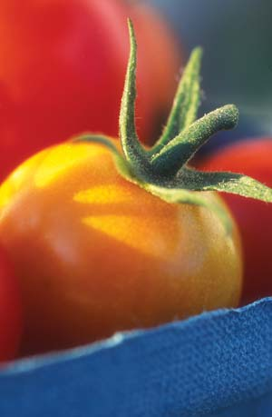
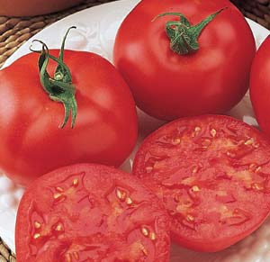
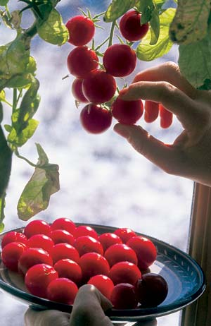
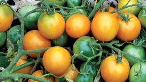
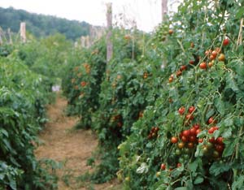
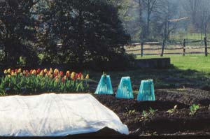
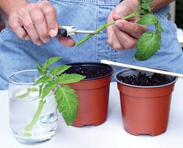
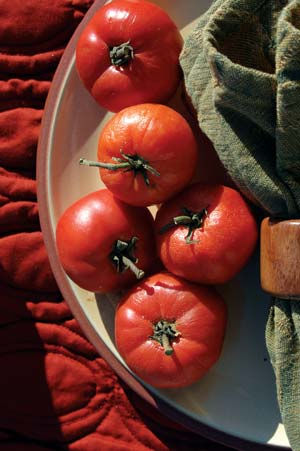

Enjoy Fresh Tomatoes All Year
Harvest a bounty of homegrown tomatoes with these five smart strategies and four special varieties.
By Barbara Pleasant
February/March 2007
Every day is a good day to eat homegrown tomatoes, so why not do all you can to make the dream of year-round fresh tomatoes come true? It’s easy to get a head start in spring if you use the right varieties and a few tricks. Then once the summer planting peaks, you can switch your attention to growing a fall crop that will finish ripening indoors after the first freeze. Plenty of light can keep a container-grown cherry tomato producing indoors through winter, which brings you back to spring.
Ready to get started? We’ll walk through the five basic steps with help from folks who share your passion for homegrown tomatoes.
1. Open the Season Early
At their five-acre organic farm in Davisburg, Mich., Diane and John Franklin have spent years in their quest to break and then hold the state record for the earliest ripe tomato. “We really push the envelope,” Diane says. With the help of a high tunnel (also known as a hoop house), their efforts pay off with ripe tomatoes in May, or in June using Wall O’ Water cloches in an open garden (see “Wonderful Wall O’ Waters”).
Though their last frost usually comes during the second half of May, the Franklins have found they can set out tomato seedlings in April if they use Wall O’ Waters and cold tolerant varieties. “We have ripe tomatoes when other people are just planting theirs, and a really good harvest starting in June rather than August,” Diane says. She suggests ‘Glacier,’‘Ida Gold’ and ‘Stupice’ for their cold tolerance, earliness and good flavor.
If you don’t like the idea of setting out seedlings in freezing weather, one alternative is to grow a few early plants indoors near a south-facing window, with supplemental light from fluores cents. Be sure to shift plants to larger containers as soon as roots begin to tickle their way through the pots’ drainage holes. Many gardeners adopt ‘Early Girl’ or ‘Sun Gold’ tomatoes as store-bought seedlings, grow them indoors until the first fruits dangle from the vine, and then set them out inside tomato cages wrapped with clear plastic during spring’s first warm spell.
2. Keep ’Em Coming in Summer
Summer is the time to experiment with new varieties that have caught your eye, but as part of your year-round tomato quest, do include at least one reliable indeterminate cherry tomato in your garden. (Indeterminate varieties produce vines and fruit until killed by frost; determinate bush types tend to set one big crop and then decline. Most heirloom and cherry tomatoes are indeterminates.) Small-fruited cherries often produce fruit despite stress from extremely hot or cold weather, and many varieties show good disease resistance. Your summer-grown indeterminates can serve as donor plants for rooted cuttings to start your winter crop (keep reading).
In climates with long growing seasons, spring-planted tomatoes often succumb to disease by late summer. You can replace them with new seedlings of slow-ripening storage varieties for winter eating, or grow plants propagated from cuttings of your summer varieties. Another option is to relocate volunteer plants that emerge in your compost. You won’t know what they are until they begin to fruit, but late-season surprise tomatoes are better than none at all.
3. Grow Slow Tomatoes For Fall
In spring you want tomatoes that mature quickly, but the best choices for fall are slow-maturing varieties known as storage tomatoes. Storage tomatoes load up with almost-mature fruit and then finish ripening very slowly. In years with good late-season growing conditions, fruits harvested in October may last until February and beyond.
Seeds of storage varieties such as ‘Ruby Treasure’ and ‘Red October’ (see “Best-tasting Choices”) should be started 12 weeks before your first fall frost is expected. Instead of waiting until cold weather is breathing down your neck, harvest storage tomatoes when their blossom ends lighten to a creamy green color, preferably during a spell of dry weather.
4. Transition into Winter
Diane Franklin suggests covering plants with sheets or blankets through the first fall frosts, which may add an additional two weeks or so of good growing weather. In addition to using blankets, I grow my last planting of tomatoes in pots, which I bury in a bed of compost. When cold weather stops their growth, I lift them out and bring them indoors - a messy yet rewarding project that gives me fresh tomatoes in early winter.
When an actual freeze is on the way, gather any almost-ripe tomatoes, wipe them with a weak bleach solution (1 tablespoon bleach per gallon of water) to kill any mold spores, and arrange them in a single layer on an indoor shelf or table. Even regular varieties will ripen and often can last until the holidays.
5. Grow Cherries Indoors in Winter
Near Decorah, Iowa, David Cavagnaro harvests cherry tomatoes from plants he grows indoors through winter in 10-gallon containers (see “Winter Tomatoes,” October/November 2004). He starts with cuttings rooted from his summer stock, and grows them in a sun-drenched window. If you don’t have a big south-facing window (or sliding glass door), provide supplemental light from an overhead fluorescent fixture - a great job for a grow-light that would otherwise be gathering dust until it’s needed for spring seedlings.
The tomatoes you harvest in midsummer will wow you with their great flavor, but homegrown off-season tomatoes are definitely better than those supermarket tennis balls. Plus, they don’t travel thousands of miles to get to your table, and they haven’t been sprayed with pesticides.
Best-tasting Choices
Special varieties are needed if you want extra-early tomatoes or slow-ripening storage tomatoes to harvest in the fall. How will they taste? When it comes to flavor, the four varieties below are the ones to beat.
- Among ultra-early tomatoes, Swedish-bred red ‘Glacier’ (55 days) has a successful five-year track record in trials conducted in Alaska. In 2005, it placed second in Seattle Tilth’s tomato taste test. Available from Peters Seed.
- The yellow-orange ‘Ida Gold’ (58 days) was the first to ripen in a 2001 field trial at the University of Vermont, and emerged as a top producer, too. Numerous gardeners testify to its sweet, fruity flavor. Available from Peaceful Valley.
- Among storage tomatoes, ‘Ruby Treasure’ (85 days) retains its tender texture for months under good conditions, and its flavor mellows from quite acid to almost sweet. Also available from Peters Seed.
- Hybrid ‘Red October’ (68 days) is the only storage tomato with resistance to two widespread tomato diseases, verticillium and fusarium wilts. Available from Burpee.
Wonderful Wall O’ Waters
Water-filled cloches such as Wall O’ Waters (also sold as Kozy Coats) have a huge following among folks who aren’t content to wait until summer for their first homegrown tomato. Wall O’ Waters are circular cloches, 18 inches tall and 18 inches wide, made of connected translucent plastic tubes that you fill with water. These water-filled tubes absorb and store daytime warmth and moderate cold while providing dependable wind protection. A 1992 study conducted at Virginia Polytechnic Institute found that Wall O’ Waters helped tomatoes ripen more than 10 days earlier than plants grown in the open or with milk jug cloches. Plus, if the Wall O’ Waters are installed before the tomatoes are transplanted, they can enhance earliness even more by pre-warming the soil. Sold in sets of three for $8 to $15, water-filled cloches will last for five years or more if cared for properly.
If you’ve never used these cloches before, here’s a trick for filling them without making a mess: Cover the plant with a small pail, place the empty cloche around it, and use a hose turned on at low pressure to fill the tubes. Give the tops of the filled tubes a few strong tugs to set them in place, then reach inside and pull out the pail.
Start New Plants from Cuttings
Whether you want vigorous young plants for a fall or winter crop, or decide to multiply a tomato you particularly like, learning to grow rooted cuttings is a valuable skill. Speed is a huge advantage. Seedlings need six to eight weeks to grow to transplanting size, but cuttings kept in warm conditions will be ready to set out in just 10 to 14 days. You also can root cuttings directly in the garden.
Tomatoes are among the easiest plants to root (cells in the stems morph into new roots quickly when kept moist), so even if you’re a newbie propagator you can expect success. Tomato cuttings will root in a jar of water, but you will get sturdy plants faster by rooting them in soil. Here’s how:
- Fill clean, 4-inch containers (or large paper cups with drainage holes in the bottom) with potting soil, and dampen thoroughly. Use a pencil or chopstick to poke a hole in the center of each prepared container.
- Select 6-inch-long tips that are free of leaf spots or other evidence of disease. Snip off any blossoms or buds with sharp scissors, and remove all leaves except the two at the top. Trim off the cut end so it will be 1 inch from the bottom of the container when the cutting is buried up to the base of the intact leaves.
- Push the prepared cuttings into the holes, and press soil against the stem. Set in a warm, shady place for seven days, and keep moist. You can protect them from strong sun by covering them with an overturned clay flowerpot. Gradually expose the rooted cutting to more light for another week.
- Move the rooted cutting to a larger pot (or transplant it to your garden) when new leaves appear or roots become visible in the drainage holes of the container.
From Vine to Vinaigrette
Your increased tomato harvest will no doubt have you searching for new recipes to try. Here are a few to get you started.
Roasted Tomato Vinaigrette
2 tbsp garlic, minced
1 tbsp unrefined sugar
1 tsp sea salt
1 tsp white pepper
1 cup plus 4 tbsp extra-virgin olive oil
¾ cup plus 2 tbsp aged balsamic vinegar
1 small sweet pepper, diced
1 medium red onion, diced
About 10 baseball-size tomatoes
1 tsp Tabasco sauce
¼ cup fresh basil, chopped
1 tbsp fresh thyme, chopped
Whisk together 1½ tablespoons garlic, sugar, salt, white pepper, 4 tablespoons oil, 2 tablespoons vinegar, sweet pepper and half the onion. Cut tomatoes in half. Toss with oil and vinegar mixture. Marinate at room temperature for 20 minutes. In a separate bowl, whisk together remaining oil, vinegar, garlic and onion, then add Tabasco sauce, basil and thyme. Refrigerate.
Heat oven to 375 degrees. Place tomatoes, cut side down, in a glass dish. Pour marinade over them, and roast for 10 minutes (about 5 minutes for cherry tomatoes). Let tomatoes cool, then dice into bite-size pieces.
Scrape everything from the baking dish into the refrigerated oil and vinegar mixture. Add roasted tomatoes. Stir and let sit for at least 10 minutes before serving over greens of your choice. Note: The dressing will be chunky. If you prefer, you can blend before serving for a finer consistency. This is enough dressing for about 8 salads.
- Tabitha Alterman
Bruschetta With Tomatoes and Basil
For the bruschetta:
8 thick slices crusty Italian bread
4 cloves garlic (2 peeled, 2 pressed), divided
3 tbsp fruity extra-virgin olive oil, divided
For the topping:
16 to 20 medium tomatoes (fully ripe)
2 to 3 tbsp finely chopped, fresh ‘Sweet’
or ‘Spicy Globe’ basil
Salt and freshly ground black pepper
Garnish: sprigs of fresh basil
To make the bruschetta: Toast bread to a medium brown. While still warm, lightly rub one side of each piece with peeled garlic, using about a quarter clove per piece. Drizzle 2 tablespoons olive oil over toasted bread, dividing it equally among the slices. Set toast aside (garlic-side up), on a medium-size platter until ready to serve.
To make the topping: Fill a medium-size saucepan halfway with water and bring to a boil. Immerse tomatoes for 30 seconds, then drain and rinse with cold water. Peel,
remove seeds and dice. In a small bowl, combine tomatoes with pressed garlic, remaining tablespoon of olive oil, basil, salt and pepper. Set aside and let the flavors meld for 30 minutes. To serve, spoon a few generous tablespoons on each piece of toast. Garnish the plate with fresh basil leaves. Serve immediately. Yields 4 servings. (See photo.)
- Rosalind Creasy, from The Edible Italian Garden, Periplus Editions, Ltd.
Ultra-easy Tomato Sauce (plus the best tomato juice you’ve ever tasted!)
Most tomato sauce is made by cooking down the tomatoes to reduce the liquid. My method is easier and faster, plus it produces delicious tomato juice in addition to the thick pulp for sauces and other recipes. (If the only tomato juice you’ve ever tried is the thick, salty commercial stuff, you’ve got to try homemade - it’s way better!) Plus you can add whatever flavorings you want and make your own V3, V5 or even V8 - try finely chopped celery, onion, parsley, and basil or cilantro, for starters. Fresh hot peppers or a splash of Tabasco also make an excellent addition.
Step One: Pick tomatoes, wash and remove cores, bag them and toss in the freezer. Forget about them until a winter day when you have some free time.
Step Two: Dump the frozen tomatoes into hot water for a couple of minutes, just until you can easily slip off the skins. Put the skinned tomatoes into a pan and heat to boiling.
Step Three: Strain in a colander to separate pulp from juice. Freeze in whatever size containers work best for you.
- Cheryl Long
|
 LYNN KARLIN You can eat tomatoes all year by using these strategies. |
 BURPEE Burpee’s storage tomato variety ‘Red October’ has great flavor and is disease-resistant. |
 JERRY PAVIA The ‘Early Girl’ variety will get your season off to a great start. |
|
 DAVID CAVAGNARO Cherry tomatoes can be grown indoors during the winter in a sunny, south window. |
 DAVID CAVAGNARO ‘Ida Gold’ tomatoes are flavorful and cold-tolerant. |
 DAVID CAVAGNARO ‘Stupice’ tomatoes are flavorful and cold-tolerant. |
|
 LYNN KARLIN Indeterminate tomatoes get support from stakes. |
 WALTER CHANDOHA Wall O’ Water cloches provide protection for young tomatoes in early spring. |
 BARBARA PLEASANT Whether you want vigorous young plants for a fall or winter crop, or decide to multiply a tomato you particularly like, learning to grow rooted cuttings is a valuable skill. |
|
ROSALIND CREASY Bruschetta with Tomatoes and Basil |
 MEGAN PHELPS Your increased tomato harvest will no doubt have you searching for new recipes to try. |
|